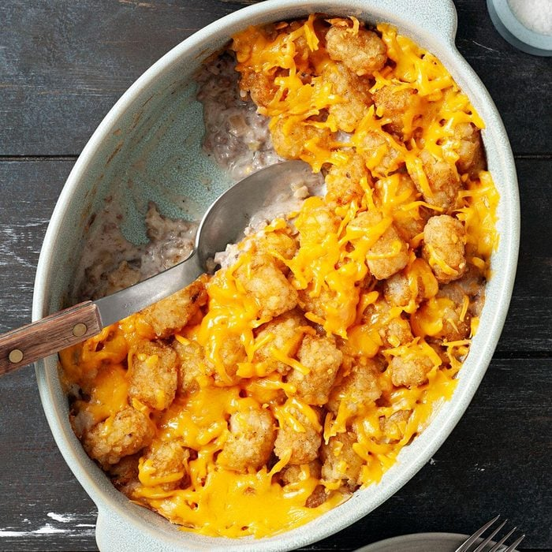
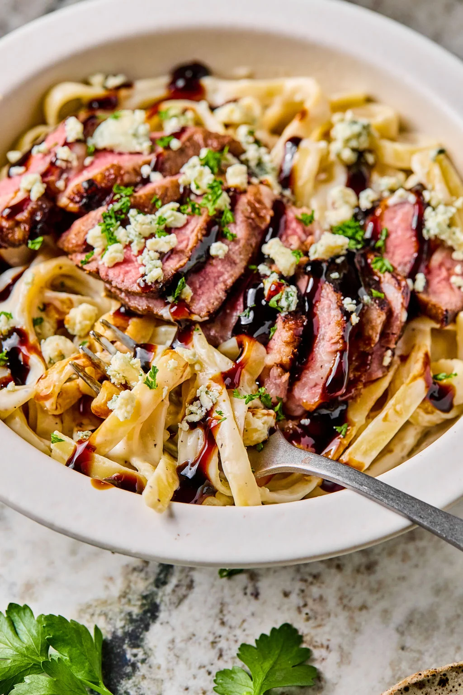
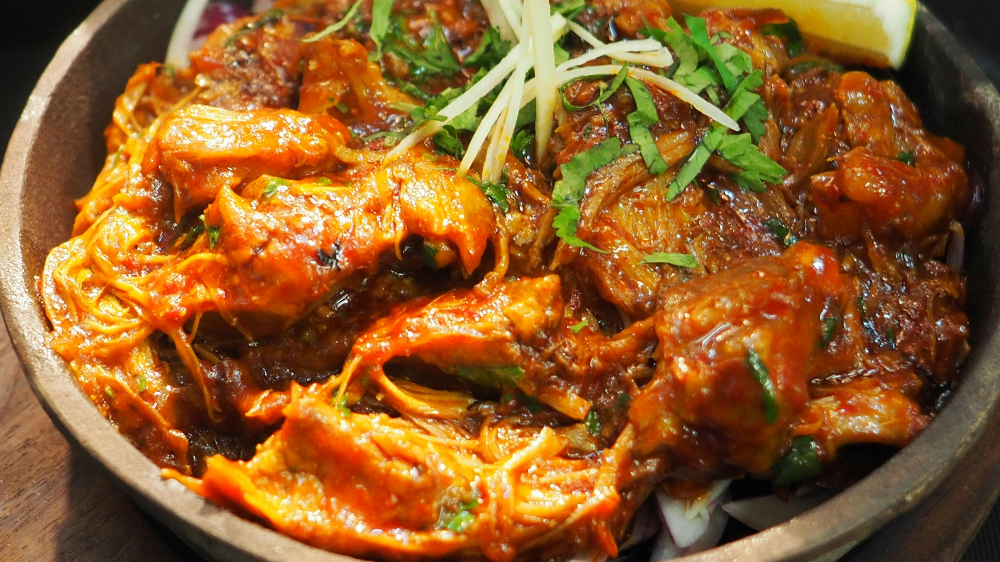

Menu of the Week!
Click each meal to check out it's ingredients and how its made!

Tator Casserole

Steak Alfredo

Chicken Curry
×
Tator Casserole
Ingredients:
- Cooking spray
- 1 (32 ounce) package frozen bite-size potato nuggets (such as Tater Tots®), divided
- 1 pound ground beef
- 1 cup chopped onion
- 2 teaspoons Worcestershire sauce
- 2 teaspoons Montreal-style steak seasoning (Optional)
- 1 teaspoon garlic powder
- ½ teaspoon ground black pepper
- 1 (10.75 ounce) can condensed cream of mushroom soup
- ½ cup milk
- ½ cup grated Cheddar cheese
- 1 teaspoon Worcestershire sauce
- 1 cup grated Cheddar cheese
Directions:
- Preheat oven to 350°F (175°C). Prepare a 13x9-inch casserole dish with cooking spray.
- Spread 20 potato nuggets in the casserole dish.
- Bake in preheated oven until warmed through, about 10 minutes.
- Brown beef and onion in a skillet; drain. Season with Worcestershire sauce, steak seasoning, garlic powder, and black pepper.
- In a bowl, mix soup, milk, ½ cup Cheddar, and Worcestershire sauce.
- Mash baked nuggets in dish. Layer with beef, soup mixture, then top with remaining nuggets and cheese.
- Bake until bubbly and golden brown, 30–40 minutes.
View Full Recipe
×
Steak Alfredo Pasta
Ingredients:
- Sirloin steak
- Balsamic vinegar
- Fettuccine
- Butter, flour, and garlic
- Milk or cream
- Grated parmesan cheese
- Toppings of your choice
Directions:
- Marinate the Steak in balsamic vinegar for 30 minutes.
- Sear the Steak over high heat until the internal temp reaches 130°F (4-5 minutes on each side).
- Make the Creamy Sauce. Create a roux then whisk in milk and parmesan cheese.
- Add cooked fettucine to the alfredo sauce and toss to coat.
View Full Recipe
×
Chicken Curry
- 3 tablespoons olive oil
- 1 small onion, chopped
- 2 cloves garlic, minced
- 3 tablespoons curry powder
- 1 teaspoon ground cinnamon
- 1 teaspoon paprika
- 1 bay leaf
- ½ teaspoon grated fresh ginger root
- ½ teaspoon white sugar
- salt to taste
- 2 skinless, boneless chicken breast halves - cut into bite-size pieces
- 1 tablespoon tomato paste
- 1 cup plain yogurt
- ¾ cup coconut milk
- ½ lemon, juiced
- ½ teaspoon cayenne pepper
- Heat olive oil in a skillet over medium heat. Sauté onion until lightly browned.
- Stir in garlic, curry powder, cinnamon, paprika, bay leaf, ginger, sugar, and salt. Continue stirring for 2 minutes.
- Add chicken pieces, tomato paste, yogurt, and coconut milk. Bring to a boil, reduce heat, and simmer for 20 to 25 minutes.
- Remove bay leaf, and stir in lemon juice and cayenne pepper. Simmer 5 more minutes.
- Serve hot and enjoy!
View Full Recipe